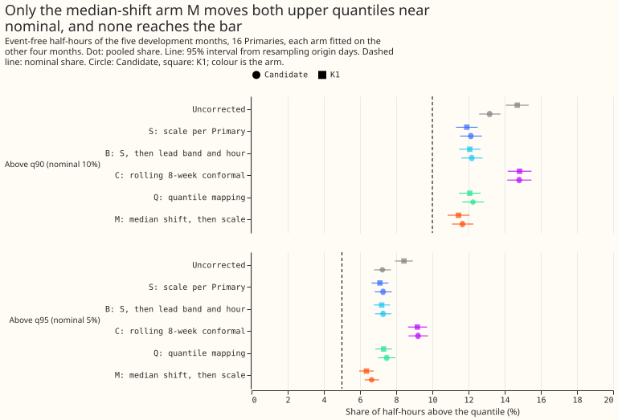
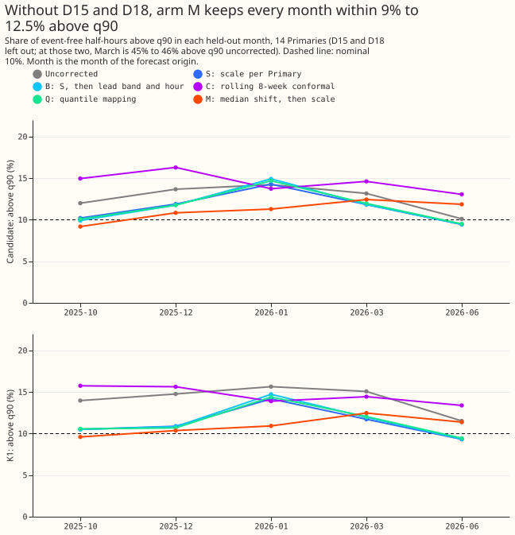
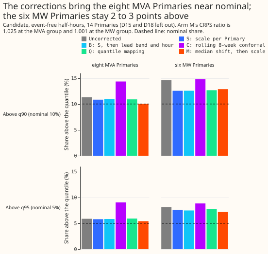
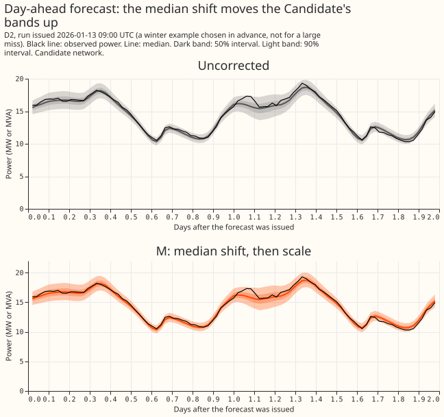
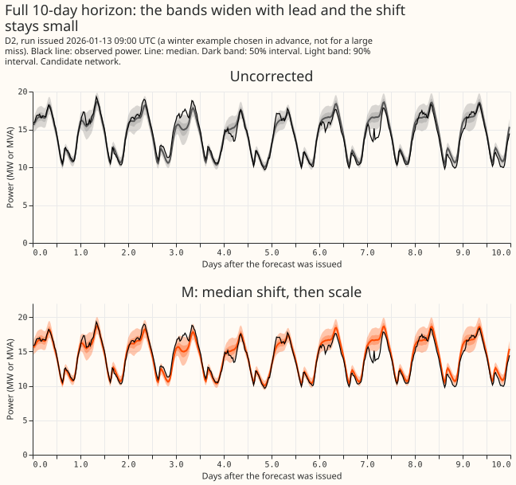

Can a correction fitted on other months bring the upper demand tail of K1 and the Candidate within 1.5 percentage points of nominal without raising CRPS by more than 1%?
Shifting each stored demand forecast to the level of recent weeks, and then widening its upper range, comes closest to fixing the too-low upper end of the forecasts, but no correction fitted without the held-out month passes the bar registered in the plan. We asked whether five corrections, each fitted on other months, can bring two shares close to their nominal values. The first share is the half-hour readings above a forecast's 90th percentile (q90, nominal 10%), and the second is the readings above its 95th percentile (q95, nominal 5%). The forecasts are the stored output of three neural networks for 16 primary substations (Primaries): K1 (reads power from 24 hours or more before the forecast), the Candidate (the same, plus summaries of the neighbouring Primaries' power), and K3 (reads no recent power). Experiment 630 found that K1 and the Candidate exceed those percentiles too often, on ordinary days as well as around load-shifts (NGED moving demand from one Primary to a neighbour). We tested the corrections on five test months (October 2025, December 2025, January 2026, March 2026, and June 2026). Each correction was fitted on the other four months, with the held-out month and the 10 days around it removed from the fitting rows, and scored on the held-out month. The corrections change the stored forecasts only, and no neural network was refitted. "Event-free" half-hours are those with no labelled or verified load-shift within 7 days at that Primary. D15 and D18 are the two Primaries with a short history. CRPS is the continuous ranked probability score, the quantile score of the whole forecast, and a CRPS ratio above 1 means the corrected forecast scores worse than the stored one.





- Verdict
partly supported. The registered bar needs, per network, an arm whose pooled event-free q90 exceedance lies in 8.5% to 11.5%, whose q95 lies in 3.5% to 6.5%, whose CRPS is at most 1.01 times the uncorrected network's, and whose q90 exceedance lies in 7% to 13% in every held-out month. On 16 Primaries arm M passes the first three conditions for K1 (11.4%, 6.4%, 1.000) and misses the first two for the Candidate (11.7%, 6.6%, 0.992). Every arm fails the month condition, so no arm passes in full. The rule givespartly supportedwhen an arm passes the first two conditions and fails another, and arm M (the arm with the smallest distance from both nominal levels) is the best arm. The month failure and the neutral CRPS both come from D15 and D18. On the 14 Primaries without them, arm M keeps every month between 9.2% and 12.5% above q90 and passes the q90, q95, and month conditions, but its CRPS ratio is 1.021 (K1) and 1.016 (Candidate), above 1.01. The pre-registered bar gates on all 16 Primaries, so the verdict stands. - Arms (all fitted on event-free rows of the other four months; held-out lead 0 to 240 hours, the whole 1 day to 10 day range that NGED uses). S: a scale per Primary on the distance above the median of every upper quantile (fitted scales per Primary, averaged over folds, 0.87 to 1.63, median 1.09 for the Candidate). B: S, then a scale pooled over Primaries per lead band and 4-hour block of valid time. C: a rolling conformal adjustment of each upper quantile from the previous 56 days. Q: quantile mapping of the whole distribution per Primary and lead band. M: a shift of every quantile by the median error of the previous 28 days, then S refitted on the shifted forecasts. Corrections S, B, and Q are fitted on later as well as earlier months (a lab design); C and M use only residuals from before the forecast was issued.
- Row set. The five development months,
roster_export_2026-11-07_dev_months: 905,502 event-free rows per network of 1,140,221 (asserted against experiment 630). The July to October 2026 window was not opened. Every development month is later than 2025-03-01, so the D15 and D18 cut removes no row. Event-free rows are the export'sevent_freerows, and NGED's logs may miss events, so event-free rows can hold unlogged load-shifts. - Pooled event-free exceedance, with 95% intervals from resampling origin days (nominal: 10% and 5%; CRPS in MW or MVA; K1 uncorrected CRPS 0.2447, Candidate 0.2477):
| Forecast and arm | Above q90 | Above q95 | CRPS ratio to uncorrected |
|---|---|---|---|
| K1, uncorrected | 14.7% (14.1, 15.3) | 8.4% (7.9, 8.9) | 1 |
| K1, S | 11.9% (11.3, 12.5) | 7.1% (6.6, 7.6) | 1.027 (1.024, 1.030) |
| K1, B | 12.1% (11.5, 12.7) | 7.2% (6.8, 7.7) | 1.027 (1.024, 1.030) |
| K1, C | 14.8% (14.2, 15.5) | 9.2% (8.7, 9.7) | 1.012 (1.003, 1.021) |
| K1, Q | 12.1% (11.5, 12.7) | 7.3% (6.8, 7.8) | 1.055 (1.051, 1.059) |
| K1, M | 11.4% (10.8, 12.0) | 6.4% (6.0, 6.8) | 1.000 (0.985, 1.016) |
| Candidate, uncorrected | 13.2% (12.6, 13.8) | 7.2% (6.8, 7.7) | 1 |
| Candidate, S | 12.1% (11.5, 12.7) | 7.3% (6.8, 7.8) | 1.033 (1.031, 1.036) |
| Candidate, B | 12.2% (11.6, 12.8) | 7.3% (6.8, 7.7) | 1.033 (1.031, 1.036) |
| Candidate, C | 14.8% (14.1, 15.5) | 9.2% (8.7, 9.8) | 1.012 (1.002, 1.022) |
| Candidate, Q | 12.2% (11.7, 12.9) | 7.5% (7.0, 8.0) | 1.064 (1.059, 1.068) |
| Candidate, M | 11.7% (11.1, 12.3) | 6.6% (6.2, 7.0) | 0.992 (0.976, 1.008) |
- Month-block intervals. Resampling the five held-out months with replacement gives much wider intervals, because five months are few: the Candidate's arm M q90 is 11.7% (10.0, 13.6), its q95 6.6% (5.5, 8.0), and its CRPS ratio 0.992 (0.939, 1.051). The bar uses the point estimates, so these intervals are descriptive.
- By month. On the 14 Primaries without D15 and D18, the Candidate's q90 exceedance, uncorrected and for arm M, is: October 12.0% and 9.2%; December 13.7% and 10.8%; January 14.2% and 11.3%; March 13.2% and 12.4%; June 10.1% and 11.9% (K1: 9.6% to 12.5% for arm M). S, B, and Q reach 9.4% to 9.5% in June, an overcorrection. At D15 and D18, March is 45.5% (Candidate) and 45.9% (K1) above q90 uncorrected and 30.2% to 32.2% for arm M, while the other months are 2% to 22%. On all 16 Primaries March therefore stays at 17.1% to 17.8% for every arm except M (15.1%).
- Cold nights. The Candidate's q90 exceedance on cold nights (18:00 to 06:00 UTC, coldest third of ensemble temperatures) is 16.4% uncorrected against 12.4% elsewhere. Arm M brings it to 12.3% against 11.5%, and S leaves it at 15.1%. K1: 17.6% against 14.1% uncorrected, and 11.9% against 11.3% for arm M.
- Metering groups (Candidate, event-free). The eight MVA Primaries: 11.3% and 5.9% uncorrected, 10.0% and 5.4% for arm M (CRPS ratio 1.025). The six MW Primaries: 14.6% and 8.1% uncorrected, 12.9% and 7.2% for arm M (CRPS ratio 1.001). The two report-only Primaries (D15 and D18): 17.0% and 10.6% uncorrected, 15.2% and 10.5% for arm M (CRPS ratio 0.845). On the 14 Primaries without D15 and D18, uncorrected, S, and M give q90 and q95 exceedance of 12.7% and 6.8%, 11.5% and 6.5%, and 11.2% and 6.1% for the Candidate, and 14.2% and 8.0%, 11.3% and 6.4%, and 11.0% and 5.9% for K1. Their CRPS ratios are 1.014 (S) and 1.016 (M) for the Candidate and 1.010 (S) and 1.021 (M) for K1, so arm M raises CRPS by 0.2 to 1.1 points more than S for a q95 closer to nominal. At D15 and D18 alone, arm M improves CRPS by 13% to 15% (ratio 0.845 to 0.866) and S worsens it by 13% to 15%.
- Arm C. The rolling conformal adjustment raised q90 exceedance from 13.6% to 15.6% on the rows it corrected (86% of event-free rows; in October 55% of rows are corrected, because the previous 56 days hold too few residuals). The adjustment at q90 averages −0.016 MW with a standard deviation of 0.34 MW across rows and is positive on 44.5% of rows, so it behaves as noise. The code recovers the nominal level on stationary synthetic data (15.2% before, 11.2% after), so the failure comes from the forecasts, as in experiment 500, and not from a coding fault.
- Tail and lower-tail effect. The shift in arm M moves the whole distribution, so its lower tail moves too: the share below q05 rises from 3.4% to 5.2% (Candidate) and from 4.6% to 6.5% (K1), and the share below q10 from 7.7% to 9.9% and 9.3% to 11.6%. Quantile mapping (Q) raises the Candidate's share below q05 to 6.6%. Only the q05, q10, q90, and q95 levels were scored. The threshold-weighted CRPS (threshold: the 95th percentile of the fitting rows' power at each Primary) rises by 9.5% (S) and 1.0% (M) for the Candidate and by 7.6% (S) and 0.2% (M) for K1.
- Curtailment cost (the protocol's avoidable curtailment cost, node-only, 12 to 36 hour leads, six signed-MW Primaries, limit as a fraction of each Primary's earlier maximum, summed over the five months; no interval was computed). At limit fraction 0.9, arm M changes the cost by −10.4% (Candidate) and −12.2% (K1), and S by −7.4% and −10.5%. At 0.5, arm M changes it by −6.0% and −8.8% and S by +10.8% and +6.0%. The cost falls for arm M at every fraction tried for K1 and the Candidate, and for arm C too (−5.2% to −14.0%).
- Pre-registered predictions. P1 failed (no arm passes). P2 failed in its first half: C and M corrected 86% and 77% of event-free rows, above the predicted 70% limit, and held in part of its second half (C misses by more than S; M does not). P3 failed: Q raised the Candidate's share below q05 from 3.4% to 6.6%, past nominal, and gave the largest CRPS rise (+6.4%). P4 held on 16 Primaries for March (above 12% for every arm, a result that D15 and D18 produce) and for June for S, B, and Q, not for C or M. P5 held for the metering groups and for K3 (median fitted scale per Primary 1.25, against 1.15 for K1 and 1.10 for the Candidate); the curtailment part was not tested (no interval).
- Reviews. One Sonnet plan review found a leak through valid times overlapping the held-out month, an in-sample Candidate band width, a pooled bar that lets months cancel, undefined minimum sizes, and weak predictions; the plan was revised before any run. One Sonnet code review before the first scored run found a leak in arm M (training shifts computed from a window that included the held-out month), fixed before the run; its other findings (ties, crossings) cannot occur in the stored quantiles. A Sonnet review of the results and the write-up reproduced the numbers and found that arm M's neutral CRPS and the March failure both come from D15 and D18, that the Candidate with arm M also misses the q95 limit, and a wrong statement about quantile mapping and the median; the write-up, the headline, the advice, and figure 2 were rewritten to show the 14 Primaries separately.
- Checks. The median error: arm M lowers the mean of observed power minus q50 from 0.0975 to 0.0464 MW (K1) and cuts the median's absolute error by 0.8% (K1, 0.4414 to 0.4380 MW) and by 1.9% (Candidate, 0.4477 to 0.4390 MW), in the same direction as its CRPS ratio, and arms S and B leave the median unchanged while Q worsens its absolute error by about 4%, so trigger 3 does not fire. The export holds no mean forecast, so the median-minus-mean check does not apply. Trigger 2 did not fire: P1 failed, but the by-month, by-group, cold-night, and arm C diagnostics above test the explanation. No other trigger applies, so no audit ran.
- Caveats. The Candidate's band width factor was set on the months it is scored on (experiment 613), so its uncorrected row is optimistic and K1 is the cleaner reference. Intervals resample origin days that share weather, so they are somewhat too narrow. Five months cannot separate a seasonal bias from a trend. Corrections S, B, and Q are not causal, because they use later months. The temperature third labels rows only, and comes from the ensemble mean of the latest run (a near-analysis proxy). The unlogged-event caveat applies to every event-free number. The page re-scores stored forecasts with no refit, so retraining cadence does not apply; the absolute scores are those of experiment 613's stored networks, and no comparison to BG2, the manual heuristic, or climatology is made here.
- What the next experiment should answer. How D15 and D18 should be corrected, since their level changed in March 2026, and whether a shift applied to the upper quantiles only keeps arm M's q95 gain without its 2% CRPS rise; test it before opening the July to October 2026 window.
- Code.
ml-experiments/00642-roster-upper-tail-correction-out-of-sample-leave-one-month-out/(e00642_arms.py,e00642_score.py,e00642_report.py,e00642_cost.py,e00642_checks.py,e00642_figures.py); importse00630_commonfrom experiment 630's folder; tables in the experiment's private data folder.